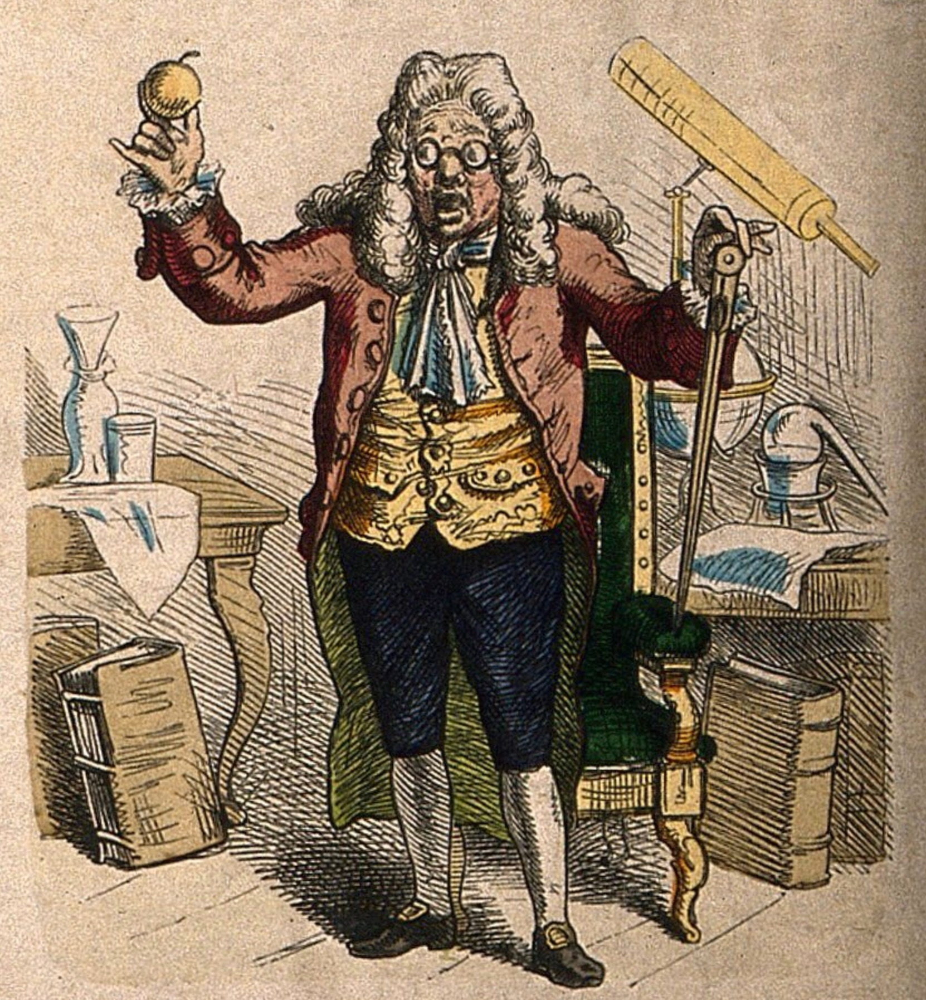

Week 2: Introduction to Probabilistic Modeling
DSAN 5000: Probabilistic Modeling and Statistical Computing
Section 03
Friday Sep 1, 2023, 23:51:46
Grad School
- Studied abroad in Beijing (Peking University/北大) → internship with Huawei in Hong Kong (HKUST)
- Stanford for MS in Computer Science (2012-2014)
- Research Economist at UC Berkeley (2014-2015)

- Columbia (NYC) for PhD[+Postdoc] in Political Science (2015-2023)
Dissertation (Political Science + History)
“Our Word is Our Weapon”: Text-Analyzing Wars of Ideas from the French Revolution to the First Intifada

Research (Labor Economics)
- “Monopsony in Online Labor Markets”: Machine Learning to enhance causal estimates of the effect of job description language on uptake rate
- “Freedom as Non-Domination in the Labor Market”: Game-theoretic models of workers’ rights (monopsony vs. labor discipline)
- “Unsupervised Extraction of Workplace Rights and Duties from Collective Bargaining Agreements”: Linguistic (dependency) parses of contracts → time series of worker vs. employer rights and responsibilities over time

Deterministic Processes
- Given a set of inputs, we can compute the outcome exactly
- Example: Given the radius of a circle, we can compute its area without any uncertainty. \(r \mapsto \pi r^2\)
- (The fact that we can compute the outcome doesn’t mean that it’s easy to do so! See, e.g., the double pendulum)

Image credit: Tenor.com
“Holy Grail” Deterministic Model: Newtonian Physics



\[ \leadsto F_g = G\frac{m_1m_2}{r^2} \]
← Dr. Zirkel follows Newton’s famous steps. Coloured wood engraving. Wellcome Collection (Public Domain)
But What Happens When…
\[ \text{Outcome}\left(\text{Dice Roll}\right) = \; ?\frac{?_1?_2}{?^2} \]
{kind=link}

Data = Ground Truth + Noise
- Depressing but true origin of statistics (as opposed to probability): the Plague 😷


Combinatorics: Ice Cream Possibilities